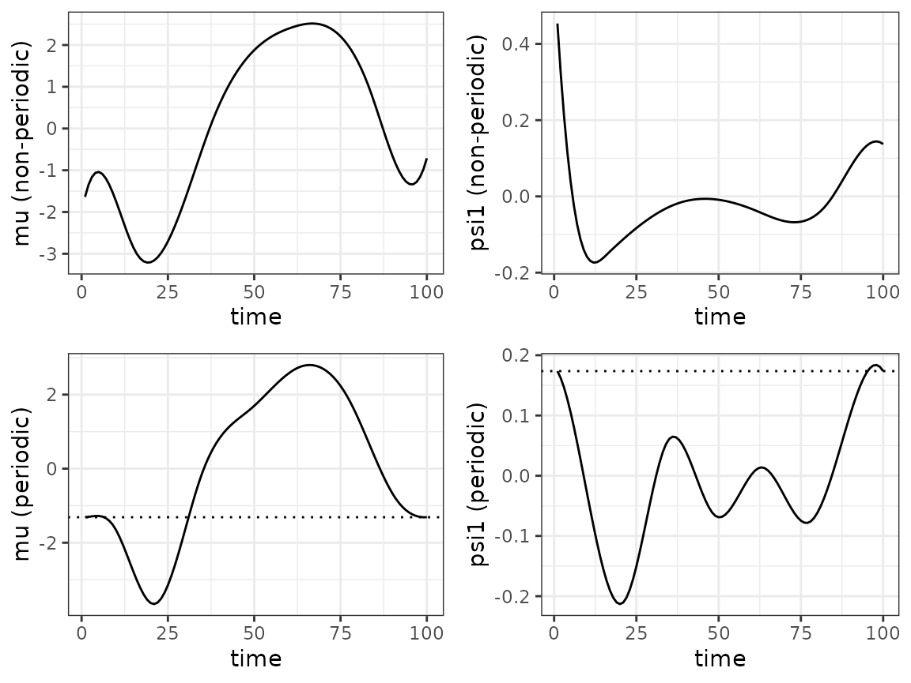

registr: a vignette
Julia Wrobel, Alexander Bauer and Erin McDonnell
2021-05-20
registr.RmdThe registr package is for registering, or aligning, exponential family functional data.
This vignette outlines the general functionality of the package. The package can handle both complete and incomplete functional data, i.e. curves which were not observed from the very beginning and/or until the very end of the common domain. Details on how to handle incomplete curves with the registr package can be found in the separate vignette "incomplete_curves".
What is exponential family registration?
Functional data analysis is a set of tools for understanding patterns and variability in data where the basic unit of observation is a curve measured over some domain such as time or space. An example is an accelerometer study where intensity of physical activity was measured at each minute over 24 hours for 50 subjects. The data will contain 50 curves, where each curve is the 24-hour activity profile for a particular subject.
Classic functional data analysis assumes that each curve is continuous or comes from a Gaussian distribution. However, applications with exponential family functional data – curves that arise from any exponential family distribution, and have a smooth latent mean – are increasingly common. For example, take the accelerometer data just mentioned, but assume researchers are interested in sedentary behavior instead of activity intensity. At each minute over 24 hours they collect a binary measurement that indicates whether a subject was active or inactive (sedentary). Now we have a binary curve for each subject – a trajectory where each time point can take on a value of 0 or 1. We assume the binary curve has a smooth latent mean, which in this case is interpreted as the probability of being active at each minute over 24 hours. This is a example of exponential family functional data.
Often in a functional dataset curves have similar underlying patterns but the main features of each curve, such as the minimum and maximum, have shifts such that the data appear misaligned. This misalignment can obscure patterns shared across curves and produce messy summary statistics. Registration methods reduce variability in functional data and clarify underlying patterns by aligning curves.
At the core of this registration method is generalized functional principal components analysis (GFPCA), a popular technique for extracting patterns shared across curves.
The registr model and algorithm
The main model for exponential family registration is
\[ \begin{eqnarray*} E\left[Y_i\left(h_i^{-1}(t_i^*)\right) | c_i, h_i^{-1} \right] &=& \mu_i(t) \\ g\left[\mu_i(t)\right]&=& \alpha(t) + \sum_{k = 1}^K c_{ik}\psi_k(t). \end{eqnarray*} \] For subject \(i\), inverse warping function \(h_i^{-1}\) maps unregistered time \(t_i^*\) to registered time \(t\) such that \(h_i^{-1}(t_i^*) = t\). \(Y_i\left(t_i^*\right)\) and \(Y_i\left(h_i^{-1}(t_i^*)\right)\) are the unregistered and registered response curves, respectively. The subject-specific means \(\mu_i(t)\) are related to the population-level mean \(\alpha(t)\) and a linear combination of population-level basis functions \(\psi(t)\) and subject-specific scores \(c_i\) through a known link function \(g\).
The registr algorithm is based on this model and iterates between the following steps:
- Estimate subject-specific means \(\mu_i(t)\) using GFPCA, conditional on current estimate of \(h_i^{-1}(t_i^*)\).
- Estimate inverse warping functions \(h_i^{-1}(t_i^*)\), conditional on current estimate of \(\mu_i(t)\).
The methods implemented in registr are described in more detail in this paper.
The registr package
The main function in the package is register_fpca(). It calls two sub-functions: a GFPCA function to implement step 1 of the iterative algorithm, and registr(), a function to implement step 2 of the algorithm. The function that calculates GFPCA can either be based on the variational EM approach outlined in Wrobel et al. (2019) or the two-step method outlined in Gertheiss, Goldsmith, and Staicu (2017). In the former case, the called function depends on the family. For family = "gaussian" (for continuous data) and family = "binomial" (for binary data) the functions bfpca() and fpca_gauss() are called for the GFPCA step, respectively. In the latter case, function gfpca_twoStep() is called, which also supports families "gamma" (for strictly positive data where the variance depends on the mean) and "poisson" (for nonnegative count data). The register_fpca() function iterates between the alignment and template calculation steps until curves are registered.
A note on data formatting
Use of this package requires that data be in a specific format: a long-form data frame with variables id, index, and value, where the value column contains functional observations for all subjects, the id column identifies which observations belong to which subject, and index provides the grid (domain) over which the values are observed.
The variable id should be a unique identifier in that each id identifies a single subject. Since we assume there is only one curve per subject for this package, id uniquely identifies each curve as well. Other covariates can be included in the data as long as the variables id, index, and value are present.
Data simulation
There are two functions for simulating data included in the package: simulate_unregistered_curves() and simulate_functional_data(). Both simulate functional data; the first is intended for demonstrating the registration algorithm and the second is for testing GFPCA sub-functions in the package.
Simulate data for registration
simulate_unregistered_curves() generates curves with both unregistered and registered time grids.The code below generates data with \(I = 10\) subjects and \(D = 200\) using this function:
registration_data = simulate_unregistered_curves(I = 50, D = 200, seed = 2018)
head(registration_data)
#> id index value latent_mean t
#> 1 1 0.000000000 0 -1.408706 0.000000000
#> 2 1 0.005025126 0 -1.447980 0.004501377
#> 3 1 0.010050251 0 -1.486200 0.009015300
#> 4 1 0.015075377 0 -1.523325 0.013541660
#> 5 1 0.020100503 0 -1.559314 0.018080346
#> 6 1 0.025125628 0 -1.594127 0.022631248The resulting object,registration_data, is a data frame with variables id, value, index, latent_mean, and t, which is consistent with the format our registr software requires. id is the identifier for a particular subject, the value variable contains binary observations, and latent_mean contains continuous observations used to generate the binary observations for the value variable. Note that when family = "binomial" we will use the binary value variable as the observations for each subject and when family = "gaussian" we use the latent_mean variable as the outcome.
The variables index and t are both time grids. Evaluated on the grid index the data is unregistered, and on the grid t the data is registered. Registered and unregistered curves are plotted below.
Each curve has one main peak, but the location of that peak is shifted. When curves are registered the peaks are aligned.
Simulate data for GFPCA
simulate_functional_data() simulates data with a population-level mean and two orthogonal principal components based on sine and cosine functions. The code below generates data with \(I = 100\) subjects and \(D = 200\) time points per subject using this function:
fpca_data = simulate_functional_data(I = 100, D = 200, seed = 2018)
ls(fpca_data)
#> [1] "alpha" "psi1" "psi2" "Y"
head(fpca_data$Y)
#> id value index latent_mean
#> 1 1 0 0.000000000 -1.549878
#> 2 1 0 0.005025126 -1.540848
#> 3 1 0 0.010050251 -1.528362
#> 4 1 0 0.015075377 -1.512449
#> 5 1 1 0.020100503 -1.493144
#> 6 1 0 0.025125628 -1.470490The resulting object,fpca_data, is a list that contains the true population-level mean (alpha) and principal components (psi1 and psi2), and a dataframe (Y). The dataframe Y contains variables id, value, index and latent_mean. This data is plotted below.
The left panel of the figure above shows the latent means for each subject, along with the population-level mean, \(\alpha(t)\), in red. The middle and right panels show the first and second principal components, \(\psi_1(t)\) and \(\psi_2(t)\), respectively. Using the \(logit^{-1}(\cdot)\) function we can convert the subject-specific means to probabilities; these probabilities are used to generate the binary values. Binary values and latent probability curve for one subject in the dataset is shown below.
We can alter the score variance for the principal components using the arguments lambda1 and lambda2. The default setting is for all subjects to have the same number of time points. However, by specifying vary_D = TRUE, we can generate data with uneven grid lengths for each subject.
Joint registration and GFPCA using register_fpca()
register_fpca() is the main function for the registr package. Use the family argument to this function to specify what type of exponential family data you would like to align. The package supports family = "gaussian" for registering continuous data, family = "binomial" for registering binary data, family = "gamma" for strictly positive data where the variance depends on the mean and family = "poisson" for nonnegative count data. The type of GFPCA is specified by the argument fpca_type, either calling the variational EM approach of Wrobel et al. (2019) (fpca_type = "variationalEM; default) or the two-step approach of Gertheiss, Goldsmith, and Staicu (2017) (fpca_type = "two-step").
Analyzing binary data
To register binary data use the following code:
registr_bin = register_fpca(Y = registration_data, family = "binomial", Kt = 8, Kh = 4, npc = 1, verbose = 2)The argument Y specifies the input dataset; this code uses the simulated registration_data. Kt and Kh specify number of B-spline basis functions for the subject-specific means and warping functions, respectively, and npc indicates the number of functional principal components to use. The latter can also be chosen based on an explained share of variance, see argument npc_varExplained.
Underlying probabilities of the binary data are plotted above. At left probabilities on unregistered domain \(t^*\), center are probabilities on true registered domain \(t\), and at right are probabilities on estimated registered domain \(\widehat{t}\). After registration the underlying probabilities are aligned – though it is important to note that the algorithm registers based on the underlying binary observations, not the true probabilities.
The true and estimated warping functions are plotted above.
Analyzing gaussian data
To register continuous data use the following code:
registration_data$value = registration_data$latent_mean
registr_gauss = register_fpca(Y = registration_data, family = "gaussian", npc = 1, Kt = 10)Estimating the GFPCA
Approaches for (Generalized) FPCA are implemented in functions specific for gaussian data (fpca_gauss()) and binomial data (bfpca()). Alternatively, gfpca_twoStep() allows to apply GFPCA also for other exponential family distributions.
Binomial FPCA using bfpca()
The registr package includes a novel variational EM algorithm for binary functional principal component analysis (bfpca), derived from methods for binary probabilistic PCA (Tipping 1999).
This bfpca() function works for data that is sparse and irregular (subjects do not have to be observed on the same grid and do not have to have the same number of grid points), as well as dense, regularly observed data. The following code runs bfpca on the fpca_data dataset.
bfpca_object = bfpca(fpca_data$Y, npc = 2, Kt = 8, print.iter = TRUE)The argument print.iter = TRUE prints the error after each iteration. The true and estimated population-level mean and FPCs are plotted below.
The algorithm runs quickly and does a good job recovering the true FPCs. Note that while the truth and estimation are not perfectly aligned, this is to be expected – the data used to estimate these functions are binary observations that are generated for the truth with some variability, so results are not expected to perfectly align. One would expect results to get better with increasing number of time points per subject.
In registr, the estimated FPCs can be easily visualized using the internal function plot.fpca. This function is automatically called when calling the general plot function on an object of class fpca.
if (have_ggplot2 && requireNamespace("cowplot", quietly = TRUE)) {
registr:::plot.fpca(bfpca_object)
}
Generalized FPCA using gfpca_twoStep()
If register_fpca() is called with fpca_type = "two-step", the GFPCA step is performed with function gfpca_twoStep(). As Gertheiss, Goldsmith, and Staicu (2017) outline, in comparison to purely marginal and thus biased GFPCA approaches, this two-step approach can be seen as a “quick-fix” for the marginal approach of Hall, Müller, and Yao (2008) that works well in practice.
Our implementation is based on the codebase accompanying their paper which can be found at github.com/jeff-goldsmith/gfpca. We further adapted the functions to work more efficiently both regarding the need for computation time and RAM, especially for large data settings with thousands of curves.
Estimating the registration using registr()
The registration step of register_fpca() calls the registr function. Though registration is intended to be performed through the register_fpca() function registr() can work as a standalone function. registr() uses constrained maximization of an exponential family likelihood function to estimate functions that align curves.
The default option gradient = TRUE uses an analytic gradient for this optimization problem (available for families "gaussian" and "binomial"). For families "gamma" and "poisson", the gradient is computed numerically and thus less computationally efficient. The difference in computation time between gradient = TRUE and gradient = FALSE is illustrated in the code below, for family = "binomial".
data_test_gradient = simulate_unregistered_curves(I = 50, D = 100, seed = 2018)
start_time = Sys.time()
reg_analytic = registr(Y = data_test_gradient, family = "binomial", gradient = TRUE)
end_time = Sys.time()
analytic_gradient = as.numeric(round((end_time - start_time), 2))
start_time = Sys.time()
reg_numeric = registr(Y = data_test_gradient, family = "binomial", gradient = FALSE)
end_time = Sys.time()
numeric_gradient = as.numeric(round((end_time - start_time), 2))In this example with just 50 subjects and 100 time points per subject, the registr() function runs in 0.72 seconds with an analytic gradient and 1.14 seconds with a numeric gradient. Since the register_fpca() algorithm is iterative and calls the registr() function several times, using an analytic derivative drastically increases the computational efficiency, especially if the number of subjects in the data is large.
Running the above example with 1000 subjects and 500 time points yields computation times of 19.2 seconds (for the analytic gradient) and 34.6 (for the numeric gradient).
The registration step can further be parallelized by using the cores argument.
Additional features
Registering incomplete curves
Incomplete curves arise in many applications. Incompleteness refers to functional data where (some) curves were not observed from the very beginning and/or until the very end of the common domain. Such a data structure is e.g. observed in the presence of drop-out in panel studies.
The registr package offers the possibility to flexibly account for different types of incompleteness structures in the registration using registr() as well as in the joint approach using register_fpca(). All incomplete curve functionalities are outlined in the separate vignette "incomplete_curves".
Parametric inverse warping functions
The registr package currently supports two types of inverse warping functions: nonparmetric B-spline basis functions (default), or parametric 2-knot piecewise linear functions. With warping = "piecewise_linear2", the registration step estimates the \(x\) and \(y\) (or \(t_i^*\) and \(t\)) coordinates of each of the two knots to construct an inverse warping function that consists of 3 line segments.
To register data with parametric inverse warping functions, using the following code:
registration_data = simulate_unregistered_curves(I = 10, D = 50, seed = 2018)
registr_parametric = register_fpca(Y = registration_data, family = "binomial",
Kt = 8, Kh = 4, npc = 1, gradient = FALSE,
warping = "piecewise_linear2")This argument works for all families. Note that the gradient option is currently unavailable for parametric inverse warping functions. Below are the resulting inverse warping functions from both the nonparametric (left) and piecewise_linear2 (right) specifications. The slopes of the 3 line segments that make up one’s parametric function can provide some interpretation about how that particular subject’s data was warped to align with the population mean.
Beyond interpretability, another advantage of parametric inverse warping functions is the ability to specify prior information about how they should look. The register_fpca() function can include normally-distributed priors which pull warping functions toward the identity line. Specifically, the priors pull the knot coordinates toward (0.25, 0.25) and (0.75, 0.75).
To activate the priors, one must specify priors = TRUE and choose a value for the argument prior_sd, the standard deviation that will be applied to all 4 prior distributions.
registr_par_priors = register_fpca(Y = registration_data, family = "binomial",
Kt = 8, Kh = 4, npc = 1, gradient = FALSE,
warping = "piecewise_linear2",
priors = TRUE, prior_sd = 0.1)As expected, a smaller variance lead to stronger tendency toward the prior means. This is demonstrated in the warping function plots below.
The ability to specify priors is currently only available for binary curve registration, not Gaussian.
Periodic B-spline basis functions for GFPCA
In some cases it may be of interest to place periodic boundary conditions on the B-spline basis functions for the population-level and subject-specific mean templates. The periodic conditions ensure that the resulting function starts and ends with the same value. This may be useful when modeling cyclical data, such as daily physical activity patterns. To use periodic B-spline basis functions during registration, use the option periodic = TRUE:
registr_periodic = register_fpca(Y = registration_data, family = "binomial",
Kt = 8, Kh = 4, npc = 1, gradient = FALSE,
periodic = TRUE)Note that the gradient option is currently unavailable for periodic = TRUE.
The resulting population mean and principal component from registering the continuous data using periodic = FALSE (default) and periodic = TRUE are plotted below, with dotted lines to demonstrate the unification of the start and end of the periodic functions.

Choosing the template function
By default registr() estimates the overall mean of all curves and uses this mean curve as the template function to which all curves are registered. In the joint approach (register_fpca()) this mean curve is used as template for an initial registration step, before the main iteration between registration and GFPCA starts.
In some situations the overall mean is not the most reasonable choice for the template. See for example the following curves with a trailing incompleteness structure where some processes were not observed until their very end. The shape of the mean curve does not match any of the observed curve shapes well.

Performing the registration with this mean curve as template would lead to the following result:
reg1 = registr(Y = temp_dat, family = "gaussian", Kh = 4,
incompleteness = "trailing", lambda_inc = 0)
if (have_ggplot2) {
ggplot(reg1$Y, aes(x = index, y = value, col = id)) +
geom_line() +
ggtitle("Registration with overall mean (black) as template function")
}
Alternatively, the template function can be manually defined using one of the following options:
- Define the template as the mean curve only based on some subset of the observed curves
Y - Define the template as one observed curve
- Define the template curve independently from the observed curves
The subset of curves (for option 1) or one specific curve (for options 2 and 3) can be specified using the argument Y_template. In the following example, the red curve with id 1 is used as template:
Y_template = temp_dat %>% filter(id == 1)
reg2 = registr(Y = temp_dat, family = "gaussian", Kh = 4, Y_template = Y_template,
incompleteness = "trailing", lambda_inc = 0)
if (have_ggplot2) {
ggplot(reg2$Y, aes(x = index, y = value, col = id)) +
geom_line() +
ggtitle("Registration with red curve as template")
}
Help files
Documentation for individual functions gives more information on their arguments and return objects, and can be pulled up via the following:
References
Gertheiss, J., J. Goldsmith, and AM. Staicu. 2017. “A Note on Modeling Sparse Exponential-Family Functional Response Curves.” Computational Statistics & Data Analysis 105: 46–52.
Hall, P., HG. Müller, and F. Yao. 2008. “Modelling Sparse Generalized Longitudinal Observations with Latent Gaussian Processes.” Journal of the Royal Statistical Society: Series B (Statistical Methodology) 70 (4): 703–23.
Tipping, M. E. 1999. “Probabilistic Visualisation of High-Dimensional Binary Data.” In Advances in Neural Information Processing Systems, 592–98.
Wrobel, J., V. Zipunnikov, J. Schrack, and J. Goldsmith. 2019. “Registration for Exponential Family Functional Data.” Biometrics 75 (1): 48–57.